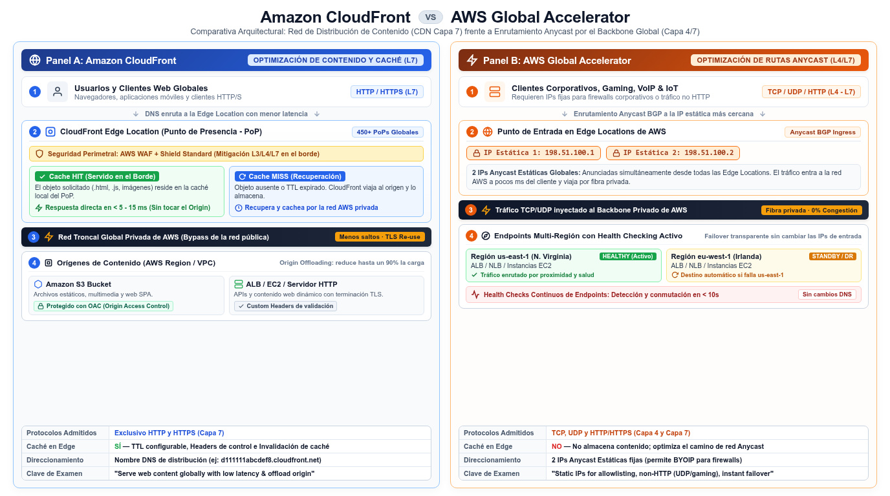

CloudFront y Global Accelerator Amazon CloudFront · AWS Global Accelerator
Los dos servicios que acercan tu carga al usuario: CloudFront mueve el contenido hacia la edge network; Global Accelerator mueve el tráfico del usuario hacia AWS por la red global.
Amazon CloudFront es la franquicia de tu restaurante: sirve el menú desde un local junto al cliente (la edge location) en lugar de hacerle viajar a la cocina central (el origin). Es un servicio web que acelera la distribución de contenido estático y dinámico — .html, .css, .js, imágenes — a través de una red mundial de data centers de borde. AWS Global Accelerator, en cambio, no cachea nada: es el carril VIP por la red privada global de AWS — dos IPs anycast estáticas que llevan el tráfico del usuario, por la red troncal de AWS, hasta el endpoint de la Region más cercana. Uno optimiza contenido; el otro optimiza rutas.
El examen los enfrenta constantemente porque ambos se venden como "mejora la latencia global". La frontera real: si la carga es web y cacheable, CloudFront reduce además la carga del origin (el contenido se sirve desde decenas de ciudades); si la carga es TCP/UDP no HTTP — gaming, IoT, VoIP — o necesitas IPs fijas y enrutado regional con health checking, Global Accelerator es la herramienta. Ambos se combinan: GA por delante de endpoints CloudFront/ALB/NLB, y GA es también el motor de las accelerated VPNs. Con el vocabulario en inglés — edge location, origin, distribution, anycast — los enunciados se leen a la primera.
CloudFront: distribuir contenido desde la edge
El mecanismo canónico: cuando un usuario pide contenido servido por CloudFront, la petición se enruta a la edge location que proporciona la menor latencia; si el contenido ya está cacheado ahí, se entrega inmediatamente (cache hit); si no, CloudFront lo recupera de un origin que tú has definido — un bucket S3, un canal MediaPackage o un servidor HTTP — y lo cachea para las siguientes peticiones (cache miss). El objeto de configuración se llama distribution: le dices a CloudFront desde dónde quieres que se sirva el contenido y cómo gestionar el delivery. La ventaja de rendimiento no es solo la cercanía: cada petición viaja por la red troncal de AWS en lugar de cruzar la colección caótica de redes interconectadas de internet — menos saltos, menos latencia de primer byte y mayor tasa de transferencia.
El segundo beneficio es estructural: como copias de tus objetos (caché) viven en múltiples edge locations, ganas fiabilidad y disponibilidad — el fallo de un camino de red no derriba el servicio, y los picos de demanda se absorben en el borde. El contenido estático es el caso perfecto (assets, imágenes, vídeos, paquetes de software); el dinámico también se beneficia de la ruta optimizada y de la reutilización de conexiones TLS hacia el origin. La vida útil de cada objeto en caché la gobierna el TTL — y cuando publicas algo urgente, la invalidación de caché echa abajo el objeto antes de que expire. Para orígenes S3, el patrón de examen manda mantener el bucket privado y permitir el acceso solo desde CloudFront, de modo que nadie bypase la CDN.

Global Accelerator: IPs anycast sobre la red global
AWS Global Accelerator es un servicio global en el que creas accelerators para mejorar el rendimiento de tus aplicaciones ante usuarios locales y globales. Su pieza visible son las direcciones IP estáticas anycast desde la edge network de AWS: dos direcciones IPv4 estáticas por accelerator — o cuatro en dual-stack (dos IPv4 y dos IPv6) — que puedes traer de tu propio rango si usas BYOIP. El usuario final entra por la edge location más cercana y desde ahí el tráfico viaja por la red global de AWS hasta el endpoint de la Region más próxima. En su variante estándar, mejora la disponibilidad de aplicaciones de internet con audiencia global; en la variante custom routing, mapea usuarios concretos a destinos concretos entre muchos.
Dos rasgos que lo hacen único en el examen. Primero, las IPs estáticas: tus clientes o firewalls corporativos pueden fijar reglas a esas dos direcciones mientras tú conmutas endpoints, Regions o load balancers detrás — algo imposible con los DNS de un ALB/NLB solos (ahí las IPs cambian). Segundo, el enrutado por la red AWS con health checking de endpoints: si los endpoints de una Region fallan, el tráfico se desvía a endpoints sanos en otra, y la IP de entrada no cambia. Por eso GA también es el motor de la accelerated Site-to-Site VPN — AWS crea y gestiona dos accelerators por ti en ese caso. Endpoint típico: un ALB o NLB multi-AZ, o instancias EC2 directamente.
| Dimensión | CloudFront | Global Accelerator |
|---|---|---|
| Naturaleza | CDN — caché de contenido HTTP/HTTPS en edge locations | Enrutado de tráfico por la red global AWS (TCP/UDP) |
| Direcciones | Nombres de dominio (distributions); sin IP fija para el cliente | 2 IPs IPv4 anycast estáticas (4 en dual-stack), BYOIP opcional |
| Qué optimiza | Latencia de contenido + offload del origin vía caché | Ruta de red y disponibilidad regional de los endpoints |
| Protocolos | HTTP/HTTPS (contenido estático y dinámico) | TCP/UDP — incluido tráfico no HTTP como gaming o VoIP |
| Cacheo | Sí — TTL, invalidación, HIT/MISS | No — no cachea nada |
| Caso estrella | Sitio web/app global con assets distribuidos | IPs fijas globales + failover regional de endpoints |
¿Cuál elijo? La frontera práctica
La pregunta decana: "serve users worldwide with the lowest latency". Si la carga es HTTP/S — web, API con respuestas cacheables, descargas, streaming — la respuesta es CloudFront: caché en el borde, invalidaciones y precios por transferencia de edge. Si el enunciado nombra TCP o UDP puro, gaming, IoT o "must not change the IP addresses" o "static IP addresses required", la respuesta es Global Accelerator. Los escenarios híbridos aceptan ambos en capas: GA delante para ruta global y failover entre Regions, CloudFront detrás para el contenido. Cuando aparece "accelerate VPN connections", GA está implicado por diseño.
Mira también el matiz de disponibilidad: la caché de CloudFront sigue sirviendo contenido aunque el origin esté caído (hasta que expire el TTL), mientras que la disponibilidad de GA viene de health checks y desvío entre Regions sin tocar las IPs. Para el dominio de costes, recuerda que ambos se cobran por tráfico (transferencia procesada), no por horas de instancia — otro argumento para servir lo cacheable desde la edge y reservar GA para tráfico sensible a la ruta. Estas páginas cierran el bloque global junto a Route 53: DNS elige el endpoint, GA transporta la conexión y CloudFront entrega el contenido.
contenido cacheable"| CF["CloudFront
CDN HTTP y HTTPS"] Q -->|"app TCP o UDP
o IPs estaticas"| GA["Global Accelerator
anycast y red AWS"] CF -.->|"se combinan:
CF entrega · GA enruta"| GA classDef navy fill:#EFF6FF,stroke:#3B82F6,stroke-width:2px,color:#1E293B classDef green fill:#F0FDF4,stroke:#10B981,stroke-width:2px,color:#1E293B classDef amber fill:#FFF7ED,stroke:#F59E0B,stroke-width:2px,color:#1E293B class Q navy class CF green class GA amber
| Si el enunciado dice… | La respuesta apunta a… |
|---|---|
| "deliver .html, .css, .js and images worldwide" | CloudFront distribution con origen S3/HTTP |
| "users report slow first byte from distant Regions" | CloudFront (edge + red troncal AWS) |
| "application uses UDP; users need the nearest Region" | Global Accelerator |
| "corporate firewall needs fixed addresses" | Global Accelerator (2 IPs anycast estáticas) |
| "serve cached content even if origin degrades" | CloudFront con TTLs adecuados |
| "failover between Regional endpoints without DNS changes" | Global Accelerator con health checking |
- CloudFront = CDN: edge locations, origins (S3, HTTP server, MediaPackage) y distributions como objeto de configuración.
- La petición va a la edge de menor latencia; HIT entrega inmediato, MISS recupera y cachea; el TTL gobierna la vigencia.
- Cache = latencia + offload del origin + disponibilidad (el borde sirve aunque el origin sufra).
- La red troncal de AWS reduce saltos frente a la internet pública — mejor primer byte y más throughput.
- Global Accelerator: 2 IPs IPv4 anycast estáticas (4 dual-stack), BYOIP opcional; enruta TCP/UDP por la red AWS.
- GA no cachea: optimiza ruta y disponibilidad, con endpoints en varias Regions y desvío sin cambiar IPs.
- CloudFront para HTTP cacheable; GA para TCP/UDP, IPs fijas y failover regional; ambos combinables en capas.
- La accelerated VPN monta dos accelerators de GA — conexión directa con el bloque de conectividad.
- NET-14 Amazon CloudFront — Introduction (CDN, edge locations) · docs.aws.amazon.com/AmazonCloudFront/latest/DeveloperGuide/Introduction.html
- NET-15 AWS Global Accelerator — What is (static anycast IPs) · docs.aws.amazon.com/global-accelerator/latest/dg/what-is-global-accelerator.html